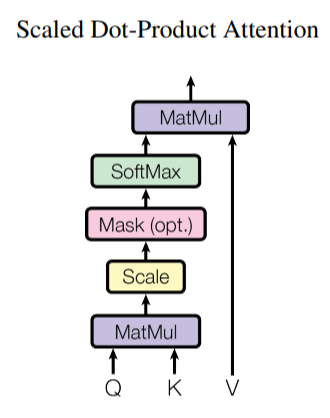
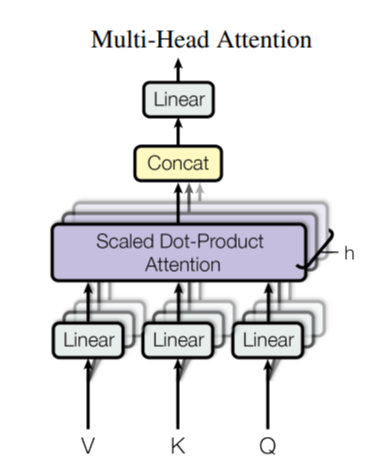
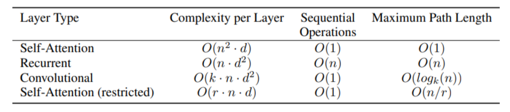

对Attention的一些解读
2017年，Google发表了论文《Attention is All You Need》，在论文中，抛弃了常用的RNN结构，提出了一种比较新颖的Attention结构。
Attention的作用
在做NLP任务时，原始数据一般是句子级别，所以需要先将句子拆分，中文通常按照词或者字级别进行拆分。以中文字拆分为例，拆分后的每个字通过字典获取这个字的唯一编号，然后将这个编号转换成对应的字向量。这样，一个句子X可以表示成 $X=( x0,x_1, …,x_n)$，其中 $x_i$ 为该句子中第 $i$ 个字的字向量，维度为v, 即$X\in R{n×d_v}$。
将编号转换成向量的最简单方法为one-hot编码，但是这种编码方式不具备实用性，我们需要的是一种维度更低的，表达语义效果更好的向量。
RNN
在NLP领域中，最常用的编码结构为RNN结构，RNN方法的过程可以简单表示为一种递归的方式
这样，在改变原始字的向量维度的同时，还可以结合到这个字之前的字的信息，从而可以实现对于同一个字在不同语境中生成不同的字向量。
在所有语言中，都会出现字或者单词存在一字多义的情况，使用one-hot编码的方式，无法处理这样的情况。比如说，“一头牛”和“你真牛”中的“牛”明显不是同一个含义，甚至于词性都不一样，但在one-hot这样的编码方式中，这两个“牛”的字向量是完全相同的，而在RNN结构中就可以实现同一个字根据上下文语义生成不同的字向量，例如双向的RNN结构可以同时获取当前字之前和之后的语义信息。
基于这样的特性，RNN天然的适合序列建模，但RNN的明显缺点之一就是无法并行，因此速度较慢，另外RNN无法很好地学习到全局的结构信息。因为它本质是一个马尔科夫决策过程，其他字对于当前字的影响会随着距离的拉远而削弱和稀释，这和语言学上的表现是不一致的，语言中字之间的关系并不严格和位置正相关，因此很多时候，距离较远的字对当前字在语义信息上的影响要大于当前字旁边的字，而这一点很难在RNN结构上体现出来。
CNN
CNN结构也是一种可以用于生成序列字向量的结构，和RNN的递归方法不同，CNN结构通过当前字符的前后字符来重新编码当前字符，从而可以获取一定范围上下文信息，这有点儿类似于前后方向上的N-gram方法。
例如，CNN结构中卷积核尺寸为3，则经过该结构之后的字向量可以表示为：
而对于超过了卷积核范围的其他字向量信息，可以通过层级结构，扩大感受野，获取更远距离的字符信息。
Attention
Attention Mechanism和CNN与RNN最大的不同是，在attention结构中，每一个字可以获取到所有信息。
其中Q，K为列维度相同的矩阵，X为输入的句子的子向量，且K和X的向量个数相同，即 $ Q\in R{m×d_k},K\in R{n×dk},V\in R{n×d_v} $。
当Q=K=X时，称为self-attention。
以self-attention为例，在self-attention中，每个字都可以直接与句子中任意一个字直接连接，即这个字可以获取到句子中任意一个字的信息。
下面我们详细看看，attention是怎么实现这一效果的。
Attention定义

结构很简单，除去中间的Scale,Mask,SoftMax之后，就是两次简单的矩阵运算，Attention之后的矩阵维度为$R_{m×d_v}$。当Q=K=V时，就是self-attention。
对于这个结构的作用，可以这么理解：K，V是一对匹配对，Q是一个query，通过Q和K的矩阵运算，计算Q与K的相关性，再用这个相关性与V做矩阵运算，后得到一个由V构成的与Q相关的矩阵。
举个例子：有这样一句话“Attention is all you need”，使用self-attention，即Q=K=V均为该句子的向量。设每个字的向量长度为d，则Q，K，V矩阵维度为5*d。
先计算$QK^T$, 为一个5*5的矩阵，这个矩阵的第i行第j列表示第i个单词向量与第j个单词的向量的点乘。我们知道向量的点乘可以表示两个向量的“相似度”，两个向量越“相似”，它们的点乘结果越大。因此该矩阵就表示这个句子中5个单词向量之间的相似性。将这个矩阵经过scale和softmax之后，与V做矩阵运算生成一个新的5*d矩阵，这个新的矩阵就是这个句子中5个单词的新的表征向量，并且每个单词的新的表征是由这句话中的5个单词的原始向量组成的，从而每个单词的新的表征向量获取到了这个上下文的信息。
想象一下这个场景：一个队伍按次序排列，每个人只能接收到相邻人的消息，也只能向相邻的人发出消息，这种传递消息的方式就相当于RNN及其变种。我们把相邻的人称为邻居，除了自己和邻居之外的人称为非邻居，实际上每个人都接收不到非邻居的消息，这些非邻居的消息是经过自己的邻居处理过的，而不是原始的消息。
而Attention可以想象成是这种场景，所有人散布在操场上，每个人之间没有顺序关系，但是每个人都随身携带一个对讲机，可以和任意一个直接通信，每个人都根据和其他所有人直接通信之后收到的信息生成一个新的向量。
Multi-Head Attention

论文中使用的方法主要是Multi-Head Attention，这个Multi-Head Attention实际上也非常简单，首先将V,K,Q三个举证经过一层简单的全连接网络，然后新的V,K,Q矩阵进行Attention，上述的过程重复h次之后结果拼接起来，就是h次的Multi-Head Attention。
可以看出，经过Multi-Head Attention之后，新的结果矩阵维度为$R_{m×(h \widetilde d_v)}$，如果全连接矩阵不改变输入的Q，K，V三个矩阵的维度，则，经过h次的Multi-Head Attention之后，结果矩阵的列维度会变成输入的h倍，所以为了保持输入矩阵经过h次的Multi-Head Attention之后字向量维度不变，在论文中，Google设置$\widetilde d_k, \widetilde d_v$为$d_k, d_v$的 $\frac{1}{h}$。
Self-Attention
论文的一大贡献就是，证明了Self-Attention在机器翻译的编码过程中的是非常有效的。正如在Attention小节中提到的，在self-attention中，每个字都可以直接与句子中任意一个字直接连接，即这个字可以获取到序列中任意一个字的信息。因此在编码过程中，可以更好的找到每个字之间的联系。
当然，论文中使用的是Self Multi-Head Attention。
我们可以这样理解Self-Attention：对于一个序列$X=( x_0,x_1, …,x_n)$， $x_i$为序列中第i个字的字向量，序列 $X$ 经过Self-Attention之后的新向量为 $Y =( y_0,y_1, …,y_n)$， $y_i$为序列中第i个字的新生成的字向量，即：
如果不考虑最后的Softmax，可以理解为 $y_i$是由 $x_0,x_1, …,x_n$ 按照一定比例相加产生的。
这样的过程可以用来表示序列中每个字对于其他字不同的影响。
Position Embedding
上文提到Attention可以看成是所有人散布在操场上，每个人之间没有顺序关系，但是每个人都随身携带一个对讲机，可以和任意一个直接通信。这样却有一个明显的缺点，那就是序列中所有的字失去的原有的顺序关系，因为它们可以直接通信，所以并不知道它们之间的相互字符距离，而这个字符距离或者说字符的顺序在很多场景是必不可少的。比如在翻译任务中，“人吃肉”和“肉吃人”肯定不是一个相同的意思，失去顺序信息可能导致每个字的意思都翻译出来了，但是句子意思截然不同。
为了解决个问题，Google引入了”位置向量”——“Position Embedding”，通过给每一个位置编一个号，让每一个编号对应一个字向量，从而和字向量一起加入到模型中，在纯Attention模型中，Position Embedding是位置信息的唯一来源，因此它是模型的核心成分之一。
在Google的论文中，直接给出了这个“Position Embedding”的计算方法，和以往的由模型学习产生不同，论文中的“Position Embedding”是由公式直接计算出来的。
Google在论文中也提到，他们尝试过直接训练出来的位置向量，和公式计算出来的位置向量，模型效果基本一致。并且公式计算的方式可以满足模型推理时序列长度长于模型训练的情况。
计算复杂度

上图是论文中的每一层Attention与RNN以及CNN相比较的复杂度，n表示序列中字的个数，d表示字向量的长度，k表示CNN层卷积核的大小，r表示restrict Attention中相邻字的长度。
由于一般来说，一个序列中的相关联的字距离不会很大，即使是一句较长的序列，一般相关字距离也就几十。而目前预训练模型一般设置字向量的长度为512、768甚至1024等，要大于序列长度，所以从这个角度来看，Attention的计算复杂度要低于RNN。
不足之处
上面介绍了一些Attention的好处，但是它也有不足之处。首先Attention失去了位置信息，使用Position Embedding来弥补这一缺点，但是Position Emdedding对位置的表达能力有限，对于翻译任务表现还好，但是对于序列标注任务就有所力不从心了。我曾经尝试过使用self-Attention于序列标注的任务，加入Position Emdedding之后效果几乎没有提升。由此看出Attention想要完全代替RNN还需要进一步解决位置信息的问题。